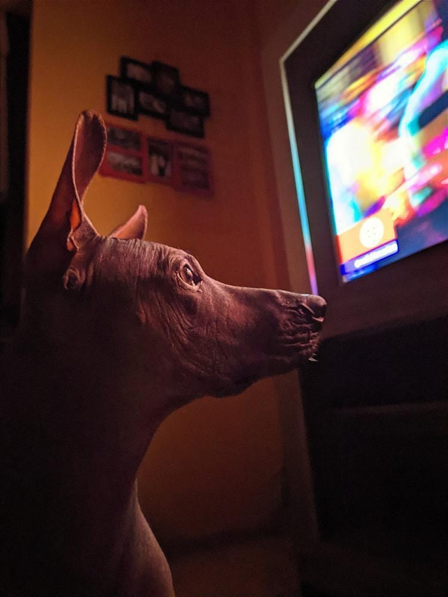

Argos: Del cuartel al glamour
En algún día caluroso de diciembre, en un cuartel militar en Piura, nació Argos.
No hubo fanfarrias ni tambores, pero sí mucho sol y un sargento confundido que, al verlo, dijo:
—“¿Eso es un perro o una rata gigante de operaciones especiales?”
La verdad es que de cachorro, Argos parecía más listo para infiltrarse en un almacén de quesos que para
posar en un álbum de perros.
Sus patitas flacas, su piel sin un solo pelo y esos ojitos pícaros lo hacían ver como un espía diminuto.
Pero Argos tenía un sueño: descubrir qué se siente tener pelo. A veces, en las noches, se quedaba mirando a
los perros peludos del cuartel como si fueran superhéroes de Marvel.
—Debe ser como llevar una capa todo el día… pero sin que te manden a la ducha, pensaba.
Pasaron los años, y el “cachorro-rata” dio un cambio que ni los soldados podían creer. Su piel brillaba como
bronce pulido, su postura era de modelo de pasarela y su mirada… de “sí, sé que soy guapo”.
Argos había tenido su glow up. Ahora, cuando pasaba por el parque, los perros peludos lo miraban con envidia:
no se mojaba en la lluvia, no tenía que ir a la peluquería y siempre estaba listo para la foto.
Un día, un perro husky le preguntó:
—“Oye, Argos, ¿y tu pelo?”
Argos sonrió con la calma de un sabio y respondió:
—“No tengo pelo… pero tengo estilo, y eso no se cae en verano.”
Y así, desde Piura al mundo, Argos se convirtió en leyenda: el viringo peruano que demostró que la verdadera facha no necesita pelaje.